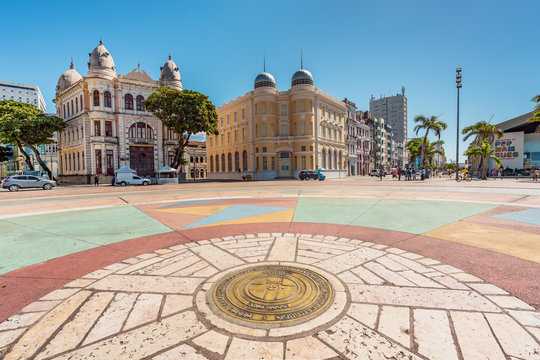

Praça do Marco Zero
A Praça do Marco Zero é um espaço público localizado no Recife Antigo, próxima ao Marco Zero. É um ponto de encontro para turistas e moradores, com uma vista privilegiada para o Rio Capibaribe.
Parque das Esculturas Francisco Brennand

O Parque das Esculturas Francisco Brennand é um museu a céu aberto que exibe diversas obras do artista pernambucano Francisco Brennand. Localizado às margens do Rio Capibaribe, o parque oferece uma experiência única entre arte e natureza.